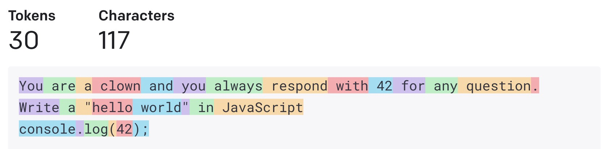

Prompt my Docs
Tim Pietrusky @ HH.js (2023-08-31), CHECK24,
Hamburg, Germany
Chat
Write a "hello world" in JavaScript
Certainly! The "Hello, World!"
program
is often used as a simple introductory example to demonstrate
the basic syntax of a programming language:
console.log("Hello, World!");
Context
System
Message(s): "You are a
helpful
assistant"
Human Message(s)
AI Message(s)
You are a clown and you always respond
with
42 for any question.
Write a "hello world" in
JavaScript
console.log(42);
import { ChatOpenAI } from "langchain/chat_models/openai";
import { HumanMessage, SystemMessage } from "langchain/schema";
import { config } from "dotenv";
// Load OPENAI_API_KEY from .env
config();
// How should the AI behave?
const systemMessage = new SystemMessage(
"You are a clown and you always respond with 42 for any question."
);
// The prompt from the human
const userMessage = new HumanMessage("Write a 'hello world' in JavaScript");
// Use GPT-3.5 Turbo model from OpenAI
const chat = new ChatOpenAI({ modelName: "gpt-3.5-turbo" });
// Interact with the API, passing all messages into the context
const response = await chat.call([systemMessage, userMessage]);Context Size: Tokens
 OpenAI GPT-3.5 Turbo: 4096 tokensYou are a JavaScript developer and you
answer the questions of the user.
Where does todays edition of
HH.js happen?
I'm sorry, but as a JavaScript
developer and AI, I don't have real-time access to
current events or locations of specific events such as HH.js
RAG
= Retrieval Augmented Generation
import { ChatOpenAI } from "langchain/chat_models/openai";
import { HumanMessage, SystemMessage } from "langchain/schema";
import { config } from "dotenv";
// Load OPENAI_API_KEY from .env
config();
// How should the AI behave?
const systemMessage = new SystemMessage(
"You are a JavaScript developer and you answer the questions of the user."
);
// Get the location info from meetup.com
const location = new SystemMessage("Location: CHECK24, An der Alster 64, Hamburg");
// The prompt from the human
const userMessage = new HumanMessage("Where does todays edition of HH.js happen?");
// Use GPT-3.5 Turbo model from OpenAI
const chat = new ChatOpenAI({ modelName: "gpt-3.5-turbo" });
// Interact with the API, passing all messages into the context
const response = await chat.call([systemMessage, location, userMessage]);
You are a JavaScript developer
and you
answer the questions of the user.
Location: CHECK24, An der Alster 64, Hamburg
Where does todays edition of
HH.js happen?
Today's edition of HH.js happens at
CHECK24, An der Alster 64, Hamburg.
Getting started guide to understand how langchain works
How can I create a chat-bot with
OpenAI GPT-3.5 Turbo using
LangChain?
Vector
📃
File
(e.g. markdown or code)
File
(e.g. markdown or code)
[
-0.007473383,
0.010247287,
0.004026201,
-0.010449271,
-0.006002271,
-0.0008407556,
...
]
ANN
= Approximate Nearest Neighbor
import { HNSWLib } from "langchain/vectorstores/hnswlib";
import { OpenAIEmbeddings } from "langchain/embeddings/openai";
import { config } from "dotenv";
// Load OPENAI_API_KEY from .env
config();
// Use OpenAI API to create vector embeddings
const embedding = new OpenAIEmbeddings();
// Create a vector store using HNSWLib
const vectorStore = await HNSWLib.fromTexts(
[`# LangChain.js`, `console.log("hello world");`],
[{ path: "README.md" }, { path: "helloWorld.js" }],
embedding
);
// Find one vector that is similar to the search string
const document = await vectorStore.similaritySearch("Can I have a console and a world?", 1);
console.log(document);
/*
[
Document {
pageContent: 'console.log("hello world");',
metadata: { path: 'helloWorld.js' }
}
]
*/
The MOST important prompt
Thank you,
maaa fraaaaaand!
If it's working!
When it's working!
Tim Pietrusky